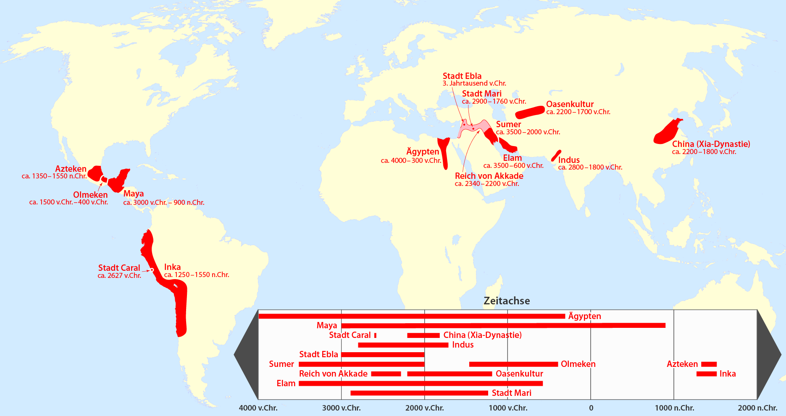
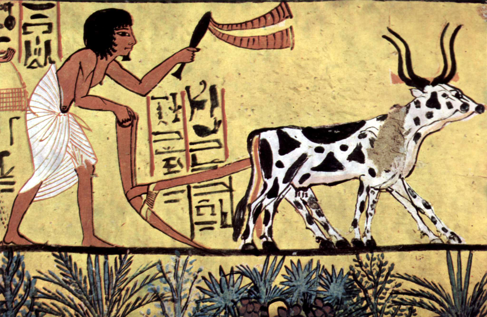
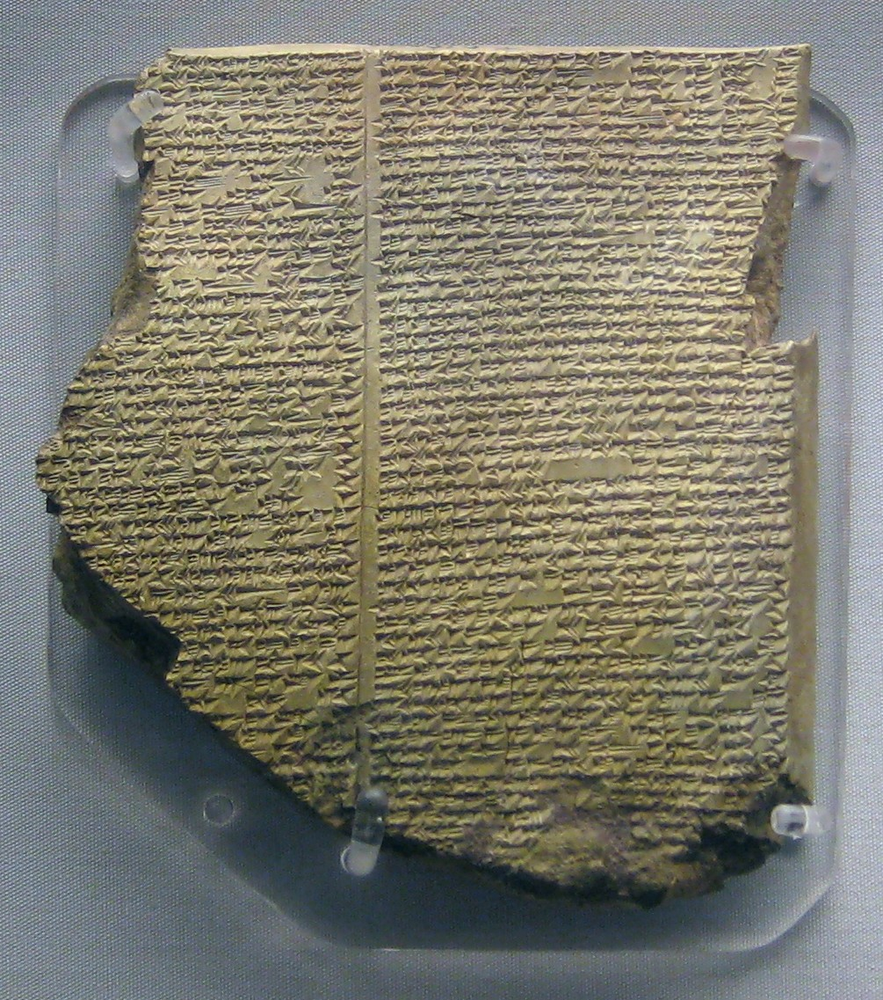
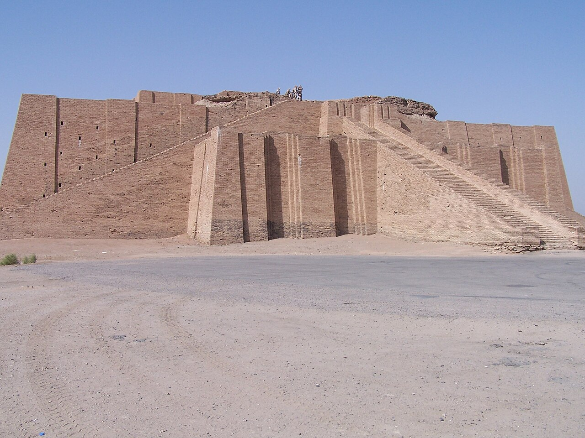
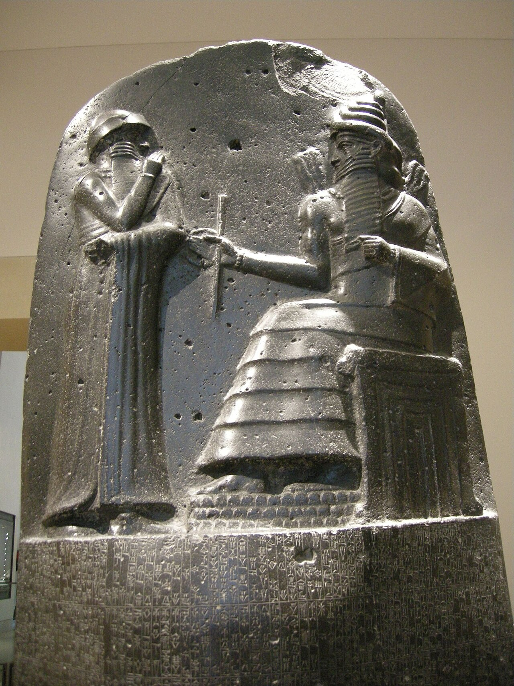

1. Το «Θαύμα» των Μεγάλων Ποταμών: Οι «Υδραυλικοί Πολιτισμοί»
Στα δύο πρώτα μαθήματα παρακολουθήσαμε τα πρώτα βήματα του ανθρώπου: τη μακρά προϊστορία του τροφοσυλλέκτη και κυνηγού, την παράτολμη «αποκοτιά» των πρώτων καλλιεργητών στα υψίπεδα της Εύφορης Ημισελήνου, και την παράλληλη εποποιία των νομάδων καβαλάρηδων στον αχανή ωκεανό της ευρασιατικής στέπας. Τώρα, η ιστορική σκυτάλη μεταφέρεται σε ένα εντελώς νέο γεωγραφικό πεδίο: στις μεγάλες αλλουβιακές κοιλάδες των γιγάντιων ποταμών της Γης.
Εκεί όπου ο Τίγρης και ο Ευφράτης ενώνονται στη Μεσοποταμία, εκεί όπου ο Νείλος διασχίζει τη Σαχάρα για να εκβάλει στη Μεσόγειο, εκεί όπου ο Ινδός διατρέχει τη νότια Ασία και ο Κίτρινος Ποταμός (Χουάνγκ Χε) διαμορφώνει την καρδιά της Κίνας, συνέβη το μεγαλύτερο ποιοτικό άλμα της ανθρωπότητας. Γεννήθηκε ο αστικός πολιτισμός, η γραφή, η κρατική γραφειοκρατία, το οργανωμένο δίκαιο και τα μνημειακά έργα.

Γιατί όμως οι κορυφαίοι πρώιμοι πολιτισμοί γεννήθηκαν όλοι δίπλα σε ποτάμια; Ο μεγάλος ιστορικός και κοινωνιολόγος Karl Wittfogel εισήγαγε τον θεμελιώδη όρο «Υδραυλικές Αυτοκρατορίες» (Hydraulic Empires). Η φύση στις περιοχές αυτές πρόσφερε ένα απίστευτα εύφορο δώρο: την ιλύ, δηλαδή τα λεπτά οργανικά ιζήματα που απέθεταν οι ετήσιες πλημμύρες. Όμως η φύση έθετε και έναν θανάσιμο όρο: το νερό έπρεπε να τιθασευτεί.
Ένας μεμονωμένος γεωργός, μια οικογένεια ή ένα απομονωμένο χωριό μπορούσαν να σκάψουν ένα μικρό αυλάκι, αλλά ήταν εντελώς ανίκανοι να κατασκευάσουν αναχώματα μήκους εκατοντάδων χιλιομέτρων, γιγάντιες δεξαμενές αποθήκευσης και σύνθετα αποστραγγιστικά κανάλια. Η ίδια η επιβίωση απαιτούσε τον απόλυτο συντονισμό δεκάδων χιλιάδων ανθρώπων. Έτσι, μέσα από την ανάγκη διαχείρισης του νερού, γεννήθηκε αναπόφευκτα το συγκεντρωτικό κράτος: βασιλείς με απόλυτη εξουσία, στρατοί επιβλεπόντων, καταναγκαστική εργασία και κεντρική συλλογή φόρων.
2. Η Μεσοποταμία: Το Λίκνο ανάμεσα στους Δύο Ποταμούς και η Αγωνία του Κατακλυσμού
Η Μεσοποταμία («η γη μεταξύ των ποταμών») απλώνεται ανάμεσα στον Τίγρη και τον Ευφράτη, στο σημερινό Ιράκ και τμήματα της Συρίας και της νότιας Τουρκίας. Σε αντίθεση με την Αίγυπτο, η οποία προστατευόταν από την αδιάβατη έρημο, η Μεσοποταμία ήταν μια ανοιχτή πεδιάδα χωρίς φυσικά σύνορα. Ήταν ένα αιώνιο σταυροδρόμι επιδρομών: νομάδες Σημίτες από την αραβική έρημο στα δυτικά, ορεσίβιοι πολεμιστές από τα όρη Ζάγρος στα ανατολικά, και εισβολείς από τον βορρά συγκρούονταν ασταμάτητα.
Το πιο κρίσιμο στοιχείο όμως ήταν ο χαρακτήρας των ίδιων των ποταμών. Ο Τίγρης και ο Ευφράτης δεν ήταν ήρεμοι. Πλημμύριζαν άκαιρα και βίαια την άνοιξη (Απρίλιο με Μάιο), ακριβώς την εποχή του θερισμού, όταν έλιωναν απότομα τα χιόνια στα ψηλά βουνά της Αρμενίας! Μια ξαφνική πλημμύρα μπορούσε μέσα σε μια νύχτα να ξεριζώσει ολόκληρες πόλεις, να εξαφανίσει τα σπαρτά και να πνίξει τα κοπάδια.
Αυτή η διαρκής φυσική ανασφάλεια σμίλεψε μια βαθιά απαισιόδοξη και αγωνιώδη κοσμοθεωρία. Για τους Σουμέριους, τους Ακκάδιους και τους Βαβυλώνιους, οι θεοί δεν ήταν στοργικοί πατέρες, αλλά ιδιότροπα, σκληρά και εκδικητικά όντα που μπορούσαν να εξαπολύσουν καταστροφές χωρίς προειδοποίηση. Ο άνθρωπος είχε πλαστεί από πηλό με έναν μοναδικό σκοπό: να υπηρετεί τους θεούς και να τους τρέφει με αδιάκοπες θυσίες ώστε να κατευνάζει την οργή τους.
Θεοί Τιμωροί vs Θεοί των Ελλήνων: Στη Μεσοποταμία οι θεοί ενσαρκώνουν τη φονική μανία του νερού. Όπως σχολιάζει χαριτωμένα η Μαρία Ευθυμίου, σε πλήρη αντίθεση με την ελληνική μυθολογία —όπου οι ολύμπιοι θεοί έχουν ανθρώπινες αδυναμίες, ο Ερμής είναι «για όλες τις δουλειές και τα θελήματα», ο καημένος ο Ήφαιστος μοχθεί κουτσός στο σκοτεινό του λαγούμι, και η Αθηνά ενσαρκώνει τη σοφία και τη στρατηγική— οι ποτάμιοι θεοί της Ανατολής δεν αστειεύονται: είναι απόλυτοι δυνάστες που απαιτούν τυφλή υποταγή για να μην εξαπολύσουν κατακλυσμό.
Η Πινακίδα της Νιππούρ & το Έπος του Γκιλγκαμές: Η αρχαιότερη σωζόμενη καταγραφή κατακλυσμού στον κόσμο ανακαλύφθηκε στη σουμεριακή πόλη Νιππούρ, περιγράφοντας τον ευσεβή βασιλιά Ζιουσούντρα που σώζει τη ζωή με εντολή του θεού Ένκι. Αυτή η παράδοση ενσωματώθηκε στην 11η πινακίδα του περίφημου Έπους του Γκιλγκαμές (~2.100 π.Χ.), του αρχαιότερου λογοτεχνικού έπους της ανθρωπότητας. Εκεί, ο σοφός Ουτναπιστίμ αποκαλύπτει στον Γκιλγκαμές πώς οι θεοί —εξοργισμένοι από τον θόρυβο των ανθρώπων που δεν τους άφηνε να κοιμηθούν (!)— αποφάσισαν να εξοντώσουν την ανθρωπότητα με έναν κολοσσιαίο κατακλυσμό. Ο θεός Έα προειδοποίησε κρυφά τον Ουτναπιστίμ, ο οποίος ναυπήγησε μια γιγάντια κυβική κιβωτό, επιβίβασε την οικογένειά του, τεχνίτες και ζώα κάθε είδους, και έστειλε διαδοχικά ένα περιστέρι, ένα χελιδόνι και ένα κοράκι για να διαπιστώσει αν υποχώρησαν τα νερά —μια παράδοση που πέρασε αυτούσια αιώνες αργότερα στη Βιβλική αφήγηση του Νώε.
Η Έξωση από την Εδέμ ως Τραύμα της Γεωργίας: Όπως επισημαίνει με οξύνοια η Μαρία Ευθυμίου, η αφήγηση της Γένεσης για την έξωση των πρωτόπλαστων από τον Παράδεισο και η κατάρα του Αδάμ («με τον ιδρώτα του προσώπου σου θα τρως το ψωμί σου») αντανακλά το βαθύτατο συλλογικό τραύμα της ανθρωπότητας: την απώλεια της ανέμελης κυνηγετικής ζωής και την υποδούλωση στον εξαντλητικό κάματο της γεωργίας. Ένα πανομοιότυπο μοτίβο διατρέχει και τον Γκιλγκαμές, όπου ο άγριος φυσικός άνθρωπος Ενκίντου αποκόπτεται από τα ζώα και εξημερώνεται για να γίνει γεωργός.
Υπάρχει όμως και ένα άλλο μοναδικό χαρακτηριστικό της Μεσοποταμίας: η απόλυτη ένδεια σε βασικές πρώτες ύλες. Στο νότιο Ιράκ δεν υπάρχει ούτε ίχνος σκληρής πέτρας, ούτε μεταλλεύματα, ούτε ψηλά δέντρα για οικοδομήσιμη ξυλεία! Υπάρχει μόνο άφθονο νερό, καλάμια και λάσπη. Πώς έχτισαν έναν πολιτισμό χωρίς πέτρα και ξύλο; Με τον πηλό! Οι Μεσοποτάμιοι υπήρξαν οι απόλυτοι μάστορες της λάσπης: έφτιαξαν λασπότουβλα ψημένα στον ήλιο ή στον φούρνο, κατασκεύασαν σωλήνες, εργαλεία, αγαλματίδια, σφραγίδες και, το σημαντικότερο όλων, πήλινες πινακίδες για να γράψουν την ιστορία τους!
3. Ο Νείλος και η Αίγυπτος: «Δώρον του Ποταμού» και η Συμπαντική Τάξη (Μαάτ)
Αν η Μεσοποταμία ήταν το θέατρο της αγωνίας και των απρόβλεπτων καταστροφών, η Αίγυπτος ήταν το βασίλειο της απόλυτης κοσμικής σταθερότητας. Όπως διατύπωσε ο Ηρόδοτος με αξεπέραστη ακρίβεια: «Αἴγυπτος δῶρον τοῦ ποταμοῦ» (Η Αίγυπτος είναι ένα δώρο του ποταμού).
Ο Νείλος, ο μεγαλύτερος σε μήκος ποταμός του κόσμου, λειτουργεί σαν μια γιγάντια πράσινη όαση που τέμνει την άνυδρη έρημο. Κάθε καλοκαίρι, από τον Ιούνιο έως τον Σεπτέμβριο, οι μουσώνες που έπεφταν στα υψίπεδα της Αιθιοπίας προκαλούσαν την άνοδο των υδάτων. Ο Νείλος υπερχείλιζε ήρεμα και προβλέψιμα. Όταν τα νερά υποχωρούσαν τον Οκτώβριο, άφηναν πίσω τους ένα παχύ στρώμα από πλούσια, μαύρη οργανική ιλύ: το περίφημο kemet («η Μαύρη Γη»), σε πλήρη αντίθεση με το deshret («την Κόκκινη Γη») της αφιλόξενης ερήμου.

Για την άντληση του νερού στα ψηλότερα επίπεδα των καναλιών, οι Αιγύπτιοι επινόησαν τον σάντουφ (Shaduf): έναν πανέξυπνο ξύλινο μοχλό με αντίβαρο από λάσπη στη μία άκρη και έναν δερμάτινο κουβά στην άλλη, που επέτρεπε στον αγρότη να σηκώνει τόνους νερού όλη μέρα με ελάχιστη μυϊκή κόπωση.
Αυτός ο προβλέψιμος ετήσιος κύκλος του Νείλου, σε συνδυασμό με την καθημερινή, αδιάκοπη ανατολή του ηλιακού θεού Ρα, γέννησε μια βαθιά αισιόδοξη και αρμονική κοσμοθεωρία. Στην καρδιά της βρισκόταν η έννοια της Μαάτ (Ma'at): η θεϊκή αρχή της αλήθειας, της ισορροπίας, της συμπαντικής τάξης και της δικαιοσύνης. Για τους Αιγυπτίους, το σύμπαν δεν ήταν χαοτικό· ήταν τέλεια ρυθμισμένο. Ο θάνατος δεν ήταν το σκοτεινό, οδυνηρό τέλος της Μεσοποταμίας, αλλά ένα φυσικό πέρασμα στην αιώνια ζωή, εφόσον η καρδιά του νεκρού αποδεικνυόταν στην τελική κρίση ελαφρύτερη από το φτερό της θεάς Μαάτ!
Και ποιος ήταν ο εγγυητής αυτής της συμπαντικής τάξης; Ο Φαραώ. Σε αντίθεση με τους Μεσοποτάμιους βασιλείς, οι οποίοι ήταν απλοί θνητοί αρχιερείς και υπηρέτες των θεών, ο Φαραώ ήταν ο ίδιος ζωντανός θεός επί γης —η επίγεια ενσάρκωση του θεού-γερακιού Ώρου εν ζωή, και του θεού του κάτω κόσμου Όσιρι μετά θάνατον. Η υπακοή στον Φαραώ δεν ήταν απλώς πολιτική υποταγή· ήταν θρησκευτικό καθήκον για τη διατήρηση της συμπαντικής ισορροπίας.
4. Η Επανάσταση της Πόλης: Ουρούκ, Ουρ και ο Καταμερισμός της Εργασίας
Γύρω στο 4.000 με 3.500 π.Χ., στη νότια Μεσοποταμία (τη Σουμερία), συντελέστηκε μια από τις πιο εκρηκτικές μεταμορφώσεις στην ιστορία του είδους μας: η Urban Revolution (Αστική Επανάσταση), όπως την ονόμασε ο σπουδαίος αρχαιολόγος V. Gordon Childe. Γεννήθηκε η πρώτη πραγματική μεγαλούπολη του κόσμου: η Ουρούκ (Uruk).
Η Ουρούκ δεν έμοιαζε με τα μικρά νεολιθικά χωριά των μερικών εκατοντάδων κατοίκων, όπως το Τσατάλχογιούκ ή η Ιεριχώ. Ήταν ένας αληθινός κολοσσός: εκτεινόταν σε πάνω από 5 τετραγωνικά χιλιόμετρα, περιβαλλόταν από πελώρια πλίνθινα τείχη μήκους 9 χιλιομέτρων με εκατοντάδες πύργους, και φιλοξενούσε έναν μόνιμο πληθυσμό που υπολογίζεται μεταξύ 50.000 και 80.000 κατοίκων!
Η Κοινή Αποθήκη & η Γέννηση του «Έχω» και της «Κλοπής»: Όταν η παραγωγή συγκεντρώνεται σε μια κεντρική δημόσια αποθήκη, γεννιούνται ταυτόχρονα οι ένοπλοι φύλακες, οι λογιστές και οι δημόσιοι λειτουργοί. Όπως επισημαίνει με οξύνοια η Μαρία Ευθυμίου, η γεωργία έκανε το ρήμα «έχω» κεντρικό άξονα της ανθρώπινης ύπαρξης: για να υπάρξει «κλοπή» πρέπει να υπάρχει ατομική ιδιοκτησία, και για να προστατευθεί το πλεόνασμα χρειάζονται νόμοι, δικαστές και κρατική εξουσία.
Πώς μπόρεσε να υπάρξει μια τέτοια πληθυσμιακή συγκέντρωση; Η απάντηση κρύβεται στο αγροτικό πλεόνασμα. Χάρη στην εντατική άρδευση και στο πρωτοποριακό βοϊδάροτρο με σπορέα, η παραγωγικότητα της γης εκτοξεύτηκε. Για πρώτη φορά στην ανθρώπινη ιστορία, το 85% με 90% του πληθυσμού που δούλευε στα χωράφια παρήγαγε αρκετή τροφή ώστε να θρέψει ένα 10% με 15% ανθρώπων που δεν παρήγαγαν τροφή οι ίδιοι!
- Αρχιτέκτονες & Μηχανικοί: Σχεδίαζαν κανάλια, τείχη και ζιγκουράτ.
- Ειδικευμένοι Τεχνίτες: Μεταλλουργοί χαλκού, υφαντές, ξυλουργοί, χαράκτες κυλινδρικών σφραγίδων.
- Επαγγελματικός Στρατός: Μόνιμοι οπλίτες και αρματηλάτες για την προστασία των αποθηκών και των συνόρων.
- Γραφείς & Λογιστές: Η πνευματική ελίτ που κατέγραφε τα πάντα σε πηλό.
- Ιερείς & Βασιλείς (Ensi / Lugal): Στην κορυφή της πυραμίδας, διαχειρίζονταν τον πλούτο της πόλης εξ ονόματος του πολιούχου θεού.
Πλεόνασμα, Πόλεμος και η Εδραίωση της Πατριαρχίας: Θα περίμενε κανείς ότι η Γεωργική Επανάσταση θα έφερνε ισότητα των δύο φύλων, αφού ιστορικά οι γυναίκες δούλευαν στα χωράφια εξίσου ή και περισσότερο από τους άνδρες. Αντιθέτως, επικράτησε η απόλυτη ανδρική κυριαρχία. Όπως εξηγεί η Μαρία Ευθυμίου, η αιτία δεν ήταν η αγροτική δουλειά αλλά οι αναπόφευκτες συνέπειές της: το πλεόνασμα τροφής συσσώρευσε πλούτο στις πόλεις, ο πλούτος προκάλεσε εξωτερικές επιδρομές και άρα αδιάκοπο πόλεμο για την άμυνα των αποθηκών, και ο πόλεμος απαιτούσε την ανδρική σωματική ισχύ. Το πλεόνασμα θεσμοποίησε τον πόλεμο, και ο πόλεμος θεμελίωσε την πατριαρχία.
Η Εξημέρωση των Ζώων και το Πρόβατο ως «Ιδανικός Υπήκοος»: Παράλληλα με τα δημητριακά («εξημέρωση φυτών»), γύρω στο 8.500 π.Χ. στην Εύφορη Ημισέληνο —τη «συνήθη ύποπτο» για κάθε πρωτοπορία— εξημερώνεται το πρόβατο. Όπως εξηγεί γλαφυρά η Μαρία Ευθυμίου, το πρόβατο ήταν το ιδανικότερο ζώο: σου δίνει μαλλί, γάλα και κρέας, αλλά κυρίως... «είναι πρόβατο»! Κινείται σε κοπάδια ακολουθώντας τυφλά έναν αρχηγό («άιντε τα πρόβατα, πήγαμε όλοι!»). Δαμάζοντας τον έναν αρχηγό, ο άνθρωπος δάμαζε αυτόματα ολόκληρο το κοπάδι. Ακολούθησαν το γουρούνι, η κατσίκα, η χήνα, η κότα, και πολύ αργότερα (~2.500 π.Χ.) το άλογο.
Κάιν εναντίον Άβελ: Η Προαιώνια Σύγκρουση Γεωργού και Κτηνοτρόφου: Στις εύφορες πεδιάδες οι άνθρωποι ήταν κατά βάση γεωργοί. Όσο ανέβαινε κανείς στα ψηλά βουνά, η γη γινόταν άγονη και η επιβίωση στρεφόταν αποκλειστικά στα κοπάδια. Όταν τον βαρύ χειμώνα οι ορεσίβιοι κτηνοτρόφοι κατέβαζαν τα ζώα τους στις πεδιάδες, τα κοπάδια καταπατούσαν και αφάνιζαν τις σπαρμένες σοδειές των γεωργών. Αυτή η προαιώνια, αιματηρή σύγκρουση —που αποτυπώνεται στον βιβλικό μύθο του Κάιν (γεωργός) και του Άβελ (βοσκός)— υπήρξε τόσο αδυσώπητη, ώστε στην Ελλάδα χρειάστηκε να διατηρηθεί μέχρι τις μέρες μας ειδικό σώμα Αγροφυλακής για να αποτρέπει τις επιδρομές των κοπαδιών στα χωράφια!
Το Άλλοπρόσωπο Θηρίο της Γεωργικής Επανάστασης: Η Ευρασιατική Στέπα και τα Σπασμένα Τρακτέρ του Μπρέζνιεφ: Η Γεωργική Επανάσταση δεν είναι μόνο η εξημέρωση των φυτών στις πεδιάδες· είναι εξίσου και η εξημέρωση των ζώων! Στην καρδιά της Ευρασίας απλώνεται η απόλυτη ζώνη της στέπας. Προσέξτε: στη στέπα δεν λείπει το νερό όπως στην έρημο —έχει ποτάμια, λίμνες και την άνοιξη, όταν λιώνουν οι πάγοι, μετατρέπεται σε έναν απέραντο βούρκο πριν βγει το χορτάρι σαν γκαζόν για χιλιάδες χιλιόμετρα. Γιατί λοιπόν δεν μπορούσε να καλλιεργηθεί; Διότι το κλίμα είναι τερατώδες! Τον χειμώνα η θερμοκρασία πέφτει στους -40°C και το καλοκαίρι σκαρφαλώνει στους +50°C —μια ετήσια απόκλιση 90 έως 100 βαθμών που μέσα σε εκατομμύρια χρόνια έκανε τη γη σκληρή σαν ατσάλι! Όπως θυμάται γλαφυρά η Μαρία Ευθυμίου από την αυτοβιογραφία του Σοβιετικού ηγέτη Λεονίντ Μπρέζνιεφ, όταν το Κομμουνιστικό Κόμμα τον έστειλε νεαρό στέλεχος στο Καζακστάν με ειδικά ενισχυμένα τρακτέρ για να οργώσει τη στέπα, μέσα σε λίγη ώρα τα ατσάλινα δόντια των τρακτέρ έγιναν κομμάτια! Χρειάστηκε να τηλεγραφήσει στην Κεντρική Επιτροπή: «Σύντροφοι, το προσπάθησα, αλλά δεν λειτουργεί κανένα τρακτέρ, σπάσαν όλα τα ατσάλια!»
Ο Πολιτισμός της Γιούρτας: Κετσές, Μαλλί και η Δίψα για Χρώμα: Σε αυτή τη γη που δεν οργώνεται, οι άνθρωποι έγιναν αποκλειστικά νομάδες κτηνοτρόφοι. Κατοικούν σε λυόμενες σκηνές, τις γιούρτες (yurt), φτιαγμένες από δεμάτια καλαμιών και ντυμένες με κετσέ —μαλλί προβάτου χτυπημένο δυνατά με όλο του το λίπος ώστε να γίνεται απόλυτα αδιάβροχο. Και επειδή η στέπα είναι ένα τοπίο μεγαλειώδες μεν, αλλά απελπιστικά μονότονο, οι νομάδες ανέπτυξαν μια εκπληκτική υφαντική τέχνη: χρησιμοποιώντας μικρά βαφικά φυτά της στέπας, υφαίνουν συγκλονιστικά χαλιά και τα κρεμούν παντού μέσα στη γιούρτα —και για μόνωση από τον παγετό, αλλά και γιατί η ανθρώπινη ψυχή μέσα στη μονοτονία διψάει να «οργιάζει το χρώμα»!
Η Ψυχολογία του Κτηνοτρόφου Πολεμιστή και η Ελβετική Φρουρά του Πάπα: Γιατί στην παγκόσμια ιστορία ο κτηνοτρόφος του βουνού και της στέπας συντρίβει στρατιωτικά τον γεωργό της πεδιάδας; Διότι ο γεωργός είναι δεμένος με το χωράφι του, ενώ ο κτηνοτρόφος είναι σκληραγωγημένος και, κυρίως, εξοικειωμένος με το αίμα: η καθημερινή του δουλειά είναι να σφάζει και να γδέρνει το ζώο «στον αέρα, τσακ-τσακ»! Δεν είναι τυχαίο, τονίζει η Μαρία Ευθυμίου, ότι τα επίλεκτα τμήματα όλων των στρατών (όπως και στους ελληνικούς Βαλκανικούς Πολέμους και το '40) αποτελούνται από ορεσίβιους κτηνοτρόφους. Ακόμη και ο Πάπας της Ρώμης —«το πιο πολύτιμο πρόσωπο στη γη μετά τον γιο μου και την κόρη σας!»— φυλάσσεται από τον Μεσαίωνα μέχρι σήμερα από την περίφημη Ελβετική Φρουρά, επειδή οι ορεσίβιοι κτηνοτρόφοι των Άλπεων ήταν οι πιο αδυσώπητοι πολεμιστές της Ευρώπης!
Άνθρωποι-Κένταυροι, το «Τσιπς» της Σέλας και οι 169 Λέξεις για το Άλογο: Αν οι ορεσίβιοι είναι σκληροί, οι νομάδες της στέπας είναι «το εκατό τοις εκατό της σκληραγωγίας»! Εξοικειωμένοι με το κοντόσωμο, απίστευτα ανθεκτικό άλογο της στέπας (ύψους μόλις 1,55 μ.), ζουν 24 ώρες το 24ωρο πάνω στη ράχη του: αν κατέβουν στη γη, ζαλίζονται και μπερδεύουν τα πόδια τους! Όταν τους κόψει η πείνα στον καλπασμό, το «σνακ» τους είναι ένα κομμάτι ωμό κρέας τοποθετημένο κάτω από τη σέλα: καθώς ιππεύουν («τάκα-τούκα, τάκα-τούκα»), το κρέας πατικώνεται, ψήνεται από τον ιδρώτα του αλόγου και γίνεται λεπτό «σαν τσιπς»! Η ταύτισή τους με το άλογο είναι τέτοια, ώστε οι Μογγόλοι διαθέτουν —στο Θεό σας!— 169 διαφορετικές λέξεις για να το περιγράψουν (λ.χ. μία και μόνη λέξη σημαίνει «ανοιχτό καστανοκόκκινο άλογο που διαγράφεται κομψό καθώς έρχεται από μακρινό τοπίο»), ενώ παράγουν 150 είδη γαλακτοκομικών, με κορυφαίο το κουμής (γάλα φοράδας που έχει υποστεί ζύμωση) —το οποίο, όπως αφηγείται η καθηγήτρια, νοσταλγούσε με δάκρυα στα μάτια ένας ηλικιωμένος Ελληνοπόντιος γείτονάς της στο Κουκάκι, εκτοπισμένος κάποτε από τον Στάλιν στο Καζακστάν!
5. Το Μεγαλύτερο Επίτευγμα: Η Γέννηση της Γραφής
Αν ρωτήσετε ποιο είναι το σπουδαιότερο επίτευγμα της Γεωργικής Επανάστασης, η απάντηση είναι αναμφισβήτητα μία: η εφεύρεση της γραφής (~3.400 π.Χ. στη Σουμερία). Η γραφή επέτρεψε στον ανθρώπινο εγκέφαλο να υπερβεί τα βιολογικά όρια της μνήμης, να αποθηκεύσει γνώση έξω από το σώμα του και να επικοινωνήσει μέσα στον χώρο και τον χρόνο.
Όμως ο τρόπος που γεννήθηκε η γραφή απομυθοποιεί κάθε ρομαντική ψευδαίσθηση: η γραφή δεν εφευρέθηκε για να γραφτεί ποίηση, φιλοσοφία ή θεολογία! Γεννήθηκε από τη στυγνή, αμείλικτη ανάγκη της λογιστικής, της αποθήκης και της φορολογίας.

Πώς εξελίχθηκε η γραφή βήμα προς βήμα; Η αρχαιολογία έχει ανασυστήσει μια συναρπαστική πορεία χιλίων ετών:
- Τα Πήλινα Σύμβολα (Tokens): Ήδη από το 7.000 π.Χ., οι αγρότες χρησιμοποιούσαν μικρά γεωμετρικά αντικείμενα από πηλό για να μετρούν αγαθά: ένας κώνος σήμαινε ένα μέτρο σιτάρι, μια σφαίρα ένα μέτρο λάδι, ένας δίσκος ένα πρόβατο.
- Οι Σφραγισμένες Φυσαλίδες (Bullae): Για να μην μπορεί ο μεταφορέας να κλέψει μέρος του φορτίου στον δρόμο, τα σύμβολα κλείνονταν μέσα σε μια σφαιρική κούφια πήλινη μπάλα (bulla), πάνω στην οποία οι δύο συμβαλλόμενοι κυλούσαν την προσωπική τους κυλινδρική σφραγίδα.
- Οι Πρώτες Εντυπώσεις: Κάποια στιγμή, ένας πανέξυπνος γραφέας σκέφτηκε: «Γιατί να σπάμε την μπάλα για να δούμε τι έχει μέσα; Ας πιέσουμε το σχήμα των συμβόλων πάνω στον νωπό πηλό εξωτερικά πριν ψηθεί!».
- Η Σφηνοειδής Γραφή (Cuneiform) & το Φωνητικό Άλμα: Οι Σουμέριοι πίεζαν ένα τριγωνικό κομμένο καλάμι (stylus) πάνω σε νωπό πηλό, δημιουργώντας τα χαρακτηριστικά σφηνοειδή αποτυπώματα. Σταδιακά, από τα αρχικά εικονογράμματα (ζωγραφιά κεφαλής βοδιού) πέρασαν στα ιδεογράμματα και τελικά στα φωνητικά σύμβολα μέσω της αρχής του ρεμπούς (όπου το σχέδιο αποδίδει έναν ήχο). Έτσι, μπορούσαν πλέον να εκφραστούν αφηρημένες έννοιες, νόμοι και λογοτεχνία!
Στην Αίγυπτο, η γραφή πήρε τη μορφή των Ιερογλυφικών («ιερά ανάγλυφα»). Ενώ τα ιερογλυφικά κοσμούσαν τους πέτρινους τοίχους των ναών και των τάφων, για την καθημερινή διοίκηση αναπτύχθηκε η ταχύγραφη ιερατική και αργότερα η δημοτική γραφή πάνω σε πάπυρο. Ο πάπυρος, φτιαγμένος από τις συμπιεσμένες ίνες του ομώνυμου φυτού του Δέλτα, υπήρξε το πρώτο ελαφρύ, εύκαμπτο και μεταφερόμενο μέσο γραφής στην ιστορία —ο άμεσος πρόγονος του σύγχρονου βιβλίου.
6. Το Ζιγκουράτ και η Μνημειακή Αρχιτεκτονική: Ουρανοξύστες από Ψημένη Λάσπη
Καθώς οι πόλεις της Μεσοποταμίας μεγάλωναν, ο πλούτος και η εξουσία τους αποτυπώθηκαν σε κολοσσιαία αρχιτεκτονικά έργα: τα Ζιγκουράτ (Ziggurats). Το ζιγκουράτ ήταν ένας τεράστιος τεχνητός λόφος από επάλληλα επίπεδα λασπότουβλων, με εξωτερική επένδυση σκληρών ψημένων τούβλων συγκολλημένων με άσφαλτο (φυσική πίσσα), στην κορυφή του οποίου δέσποζε ο ναός του προστάτη θεού της πόλης.

Τι ήταν όμως πραγματικά ένα ζιγκουράτ; Δεν ήταν ένας απλός τόπος προσευχής. Το ζιγκουράτ ήταν η καρδιά της πόλης-κράτους:
- Κεντρική Τράπεζα & Σιταποθήκη: Στις υπόγειες και ισόγειες στοές του φυλάσσονταν τα στρατηγικά αποθέματα σιτηρών, λαδιού, μαλλιού και αποξηραμένων ψαριών σε περίπτωση λιμού ή πολιορκίας.
- Κέντρο Αναδιανομής: Εκεί προσέρχονταν οι πολίτες για να λάβουν το καθημερινό τους σιτηρέσιο σε κριθάρι και μπύρα.
- Σχολείο Γραφέων (Edubba - «Οίκος των Πινακίδων»): Εκεί εκπαιδεύονταν οι νεαροί γραφείς με σκληρή πειθαρχία στην εκμάθηση των εκατοντάδων σφηνοειδών συμβόλων, στα μαθηματικά και στη λογιστική.
- Αστεροσκοπείο: Από την κορυφή του ζιγκουράτ, οι ιερείς παρατηρούσαν τον νυχτερινό ουρανό, χαρτογραφώντας τους αστερισμούς και δημιουργώντας το πρώτο σεληνιακό ημερολόγιο.
Στη Βαβυλώνα, το μεγαλύτερο ζιγκουράτ ήταν το περίφημο Ετεμενάνκι (Etemenanki - «Ο Οίκος των Θεμελίων του Ουρανού και της Γης»), αφιερωμένο στον αρχιθεό Μαρδούκ, ύψους 91 μέτρων! Όταν οι νομάδες της ερήμου αντίκριζαν από μακριά αυτόν τον ουρανοξύστη από λάσπη όπου εργάζονταν δεκάδες χιλιάδες άνθρωποι μιλώντας διαφορετικές γλώσσες, γεννήθηκε ο θρύλος που κατέγραψε η Βίβλος ως τον Πύργο της Βαβέλ.
7. Ο Κώδικας του Χαμουραμπί και η Γέννηση του Γραπτού Δικαίου
Καθώς οι κοινωνίες έγιναν πολυάνθρωπες, ο παλιός άγραφος εθιμικός νόμος των φυλών δεν αρκούσε πλέον. Πώς ρυθμίζονται οι διαφορές ανάμεσα σε εμπόρους, δανειστές, κτηνοτρόφους, γιατρούς και ναυτικούς που δεν γνωρίζονται μεταξύ τους; Μέσα από το γραπτό δίκαιο.
Το πιο διάσημο μνημείο της αρχαίας νομοθεσίας είναι ο Κώδικας του Χαμουραμπί (~1.750 π.Χ.), βασιλιά της Βαβυλώνας. Ο Χαμουραμπί συγκέντρωσε, κωδικοποίησε και χάραξε 282 νόμους πάνω σε μια επιβλητική στήλη από γυαλισμένο μαύρο διορίτη ύψους 2,25 μέτρων, η οποία βρέθηκε στα Σούσα και εκτίθεται σήμερα στο Μουσείο του Λούβρου.

Στον πυρήνα του ποινικού δικαίου του Χαμουραμπί βρίσκεται η περίφημη Αρχή της Ανταπόδοσης (Lex Talionis): «Οφθαλμόν αντί οφθαλμού και οδόντα αντί οδόντος». Παρότι στα μάτια μας φαίνεται σκληρή, η αρχή αυτή αποτέλεσε τεράστιο βήμα προόδου για τον ανθρώπινο πολιτισμό. Έθεσε ένα απαραβίαστο όριο στην εκδίκηση: αν κάποιος σου έβγαζε το μάτι, δεν είχες πλέον το δικαίωμα να πας να σφάξεις όλη την οικογένειά του και να κάψεις το χωριό του! Η ποινή έπρεπε να είναι αυστηρά ανάλογη της βλάβης.
Ωστόσο, ο κώδικας δεν εφάρμοζε ισότητα ενώπιον του νόμου. Η κοινωνία ήταν βαθιά ταξική, και οι ποινές διέφεραν ριζικά ανάλογα με την κοινωνική τάξη:
- Οι Ευγενείς / Ελεύθεροι Προύχοντες (Awilu): Υπόκεινταν στην πλήρη ανταπόδοση. Αν ένας ευγενής έσπαγε το κόκαλο άλλου ευγενούς, του έσπαγαν το ίδιο κόκαλο.
- Οι Ελεύθεροι Κοινοί Πολίτες (Mushkenu): Αγρότες και τεχνίτες. Αν κάποιος τους έβλαπτε, ο δράστης πλήρωνε συνήθως ένα χρηματικό πρόστιμο σε ασήμι.
- Οι Δούλοι (Wardu): Αντιμετωπίζονταν ως περιουσιακό στοιχείο. Αν κάποιος τύφλωνε έναν δούλο, πλήρωνε στον κύριό του τη μισή χρηματική αξία του δούλου ως αποζημίωση φθοράς ιδιοκτησίας!
- Άρθρο 229: «Αν ένας οικοδόμος χτίσει ένα σπίτι για κάποιον και δεν το κάνει γερό, και το σπίτι καταρρεύσει και σκοτώσει τον ιδιοκτήτη, ο οικοδόμος θα θανατωθεί!».
- Άρθρο 230: «Αν σκοτώσει τον γιο του ιδιοκτήτη, θα θανατωθεί ο γιος του οικοδόμου!».
- Άρθρο 218: «Αν ένας χειρουργός κάνει βαθιά τομή σε έναν ευγενή με χάλκινο μαχαίρι και ο ασθενής πεθάνει, θα του κοπούν τα χέρια!».
- Άρθρο 235: «Αν ένας ναυπηγός φτιάξει ένα πλοίο και αυτό βουλιάξει μέσα σε έναν χρόνο λόγω κακοτεχνίας, ο ναυπηγός υποχρεούται να ναυπηγήσει ένα νέο γερό πλοίο με δικά του έξοδα και να το παραδώσει στον ιδιοκτήτη».
8. Η Τεχνολογική Έκρηξη: Τροχός, Χαλκός και το Εξηνταδικό Σύστημα
Η αστική ζωή δεν γέννησε μόνο νόμους και γραφή· πυροδότησε μια ασύλληπτη τεχνολογική επιτάχυνση που καθόρισε τον υλικό πολιτισμό για χιλιετίες.
Ο Τροχός (~3.500 π.Χ.)
Ο τροχός είναι μια από τις ελάχιστες θεμελιώδεις ανθρώπινες εφευρέσεις που δεν έχουν κανένα αντίστοιχο στη φύση. Στη φύση υπάρχουν πόδια, φτερά, πτερύγια, αλλά πουθενά δεν υπάρχει ένας ανεξάρτητος άξονας που περιστρέφεται ελεύθερα μέσα σε μια σταθερή υποδοχή!
Εφευρέθηκε αρχικά στη Σουμερία ως οριζόντιος κεραμικός τροχός, επιτρέποντας στους αγγειοπλάστες να παράγουν τυποποιημένα δοχεία αποθήκευσης σε τεράστιες ποσότητες μέσα σε λίγα λεπτά. Πολύ γρήγορα, οι τεχνίτες συνειδητοποίησαν ότι αν τοποθετούσαν δύο συμπαγείς ξύλινους δίσκους κάθετα πάνω σε έναν άξονα, μπορούσαν να κατασκευάσουν κάρα. Το κόστος μεταφοράς βαρέων φορτίων (σιτηρών, λίθων, ξυλείας) κατέρρευσε εντυπωσιακά.
Η Εποχή του Χαλκού και η Πρώτη Παγκοσμιοποίηση
Η μετάβαση από την πέτρα στα μέταλλα ξεκίνησε με τον καθαρό χαλκό (Χαλκολιθική Εποχή), αλλά ο καθαρός χαλκός ήταν πολύ μαλακός για αποτελεσματικά όπλα και εργαλεία. Η μεγάλη επανάσταση έγινε με την επινόηση του Ορείχαλκου (Μπρούντζου): ενός κράματος 90% χαλκού και 10% κασσιτέρου.
Ενώ χαλκός υπήρχε σε αφθονία (στην Κύπρο, στο Σινά, στο Ομάν), ο κασσίτερος ήταν ένα από τα σπανιότερα μέταλλα της γης. Αυτή η γεωλογική σπανιότητα ανάγκασε τους λαούς της Εποχής του Χαλκού να δημιουργήσουν τα πρώτα διηπειρωτικά εμπορικά δίκτυα: καραβάνια διέσχιζαν χιλιάδες χιλιόμετρα για να φέρουν κασσίτερο από το μακρινό Αφγανιστάν (Μπαταξάν) ή από την Κορνουάλη της μακρινής Βρετανίας μέχρι τα εργαστήρια της Μεσοποταμίας και της Αιγύπτου!
Το Σύνθετο Τόξο της Στέπας και η «Παρθική Βολή»: Σύμφωνα με τους ιστορικούς της στρατιωτικής τεχνολογίας, τα δύο όπλα που άλλαξαν τον αρχαίο κόσμο ήταν το ρωμαϊκό σπαθί (gladius) και το τόξο της στέπας. Κατασκευασμένο από τα υλικά του κτηνοτρόφου —κέρατα, κόκαλα και τένοντες ζώων—, το τόξο αυτό ήταν εξαιρετικά δύσκαμπτο (απαιτούσε τρομακτική μυϊκή δύναμη για να τεντωθεί), αλλά εκτόξευε το βέλος με τέτοια διατρητική ισχύ που τρυπούσε ακόμα και δερμάτινους ή μεταλλικούς θώρακες σε τεράστια απόσταση! Οι νομάδες, ασκημένοι από παιδιά, κάλπαζαν με ιλιγγιώδη ταχύτητα και, περιστρέφοντας τον κορμό τους κατά 180 μοίρες πάνω στη σέλα, σημάδευαν προς τα πίσω και κάρφωναν το βέλος κατευθείαν στην καρδιά του διώκτη τους («ντανκ!»).
Η Μηχανή του Τζένγκις Χαν και το Γενετικό Αποτύπωμα στην Ευρασία: Για τον πολεμιστή της στέπας, το να πολεμάει σε αναλογία «ένας προς δέκα» απέναντι στους πυκνοκατοικημένους γεωργικούς πληθυσμούς ήταν ρουτίνα· στο «ένας προς εκατό» απλώς το διασκέδαζε πριν πέσει νεκρός έχοντας πάρει μαζί του σαράντα εχθρούς! Όταν μάλιστα εμφανιζόταν ένας χαρισματικός ηγέτης ικανός να ενώσει τις αλληλοσπαρασσόμενες φυλές σε ενιαία στρατιά —όπως ο τρομερός Τζένγκις Χαν γύρω στο 1200 μ.Χ.—, η στέπα γινόταν ανίκητη: οι Μογγόλοι καταλάμβαναν εδάφη με ταχύτητα 100 χιλιομέτρων την ημέρα —ταχύτητα που ούτε τα μηχανοκίνητα πάντσερ του Χίτλερ δεν πέτυχαν στον Β΄ Παγκόσμιο Πόλεμο! Επειδή δε οι επιδρομές συνοδεύονταν από μαζικούς βιασμούς, οι σύγχρονες γενετικές έρευνες (Πανεπιστήμιο Κέιμπριτζ) αποκάλυψαν ότι εκατομμύρια άνδρες σήμερα σε όλη την Ευρασία είναι βιολογικοί απόγονοι ενός και μόνου άνδρα του 13ου αιώνα —πιθανότατα του ίδιου του Τζένγκις Χαν! (Όπως θυμάται με χιούμορ η Μαρία Ευθυμίου, όταν ανέφερε το στοιχείο αυτό σε μια διάλεξη, μια ωραιότατη Ελληνίδα στην πρώτη σειρά με ελαφρώς σχιστά μάτια αναφώνησε αυθόρμητα: «Α! Γι' αυτό έχω σχιστό μάτι!»).
Σεληνιακό vs Ηλιακό Ημερολόγιο: Οι Σουμέριοι και οι Βαβυλώνιοι βασίστηκαν στις φάσεις της Σελήνης (12 σεληνιακοί μήνες = 354 ημέρες), ένα ημερολόγιο περίπου 11 ημέρες συντομότερο από το ηλιακό έτος (365,25 ημέρες). Χωρίς εμβόλιμους μήνες, οι γιορτές μετακινούνται μέσα στις εποχές —ένα φαινόμενο που διατηρείται μέχρι σήμερα στο ισλαμικό ημερολόγιο, όπου το Ραμαζάνι μετατοπίζεται αδιάκοπα από τον χειμώνα στο καλοκαίρι!
- Η Σφαιρικότητα της Γης: Ήδη από το 2.000–1.500 π.Χ., οι Φοίνικες ναυτικοί κατέληξαν στο ότι η Γη είναι στρογγυλή από τη σταδιακή βύθιση του ορίζοντα στα μακρινά τους ταξίδια.
- Το Ηλιακό Έτος: Οι Αιγύπτιοι υπολόγισαν το έτος σε 365 ημέρες συν 1/4 της ημέρας.
- Το Ηλιοκεντρικό Σύστημα: Ο Αρίσταρχος ο Σάμιος (~300 π.Χ.) διατύπωσε το πρώτο ηλιοκεντρικό μοντέλο του σύμπαντος.
- Η Περίμετρος της Γης: Ο Ερατοσθένης (~225 π.Χ., διευθυντής της Βιβλιοθήκης της Αλεξάνδρειας), μετρώντας απλώς τη γωνία της σκιάς του ηλίου σε ένα πηγάδι στη Συήνη και στην Αλεξάνδρεια, υπολόγισε την περίμετρο της Γης σε 39.375 χιλιόμετρα —με απειροελάχιστη απόκλιση από τα πραγματικά 40.075 χλμ.!
- Η Απόσταση Γης–Σελήνης: Ο Ίππαρχος υπολόγισε την απόσταση Γης–Σελήνης σε 384.400 χιλιόμετρα (σχεδόν ταυτόσημη με τη σύγχρονη μέση απόσταση των 384.400 χλμ.!).
9. Ο Άγνωστος Γίγαντας: Ο Πολιτισμός της Κοιλάδας του Ινδού (Χαράππα & Μοχέντζο-Ντάρο)
Ενώ η σχολική εκπαίδευση εστιάζει σχεδόν αποκλειστικά στην Αίγυπτο και τη Μεσοποταμία, την ίδια ακριβώς εποχή (~2.600–1.900 π.Χ.) άκμαζε ένας τρίτος ποτάμιος γίγαντας, με γεωγραφική έκταση μεγαλύτερη από την Αίγυπτο και τη Μεσοποταμία μαζί: ο Πολιτισμός της Κοιλάδας του Ινδού (ή Πολιτισμός Χαράππα), στο σημερινό Πακιστάν και βορειοδυτική Ινδία.
Όταν οι Βρετανοί και Ινδοί αρχαιολόγοι ανέσκαψαν τη δεκαετία του 1920 τις μητροπόλεις Χαράππα (Harappa) και Μοχέντζο-Ντάρο (Mohenjo-daro), έμειναν άφωνοι από το επίπεδο της πολεοδομικής οργάνωσης:
- Ιπποδάμειος Κάναβος: Οι πόλεις δεν αναπτύχθηκαν άναρχα, αλλά σχεδιάστηκαν προκαταβολικά πάνω σε έναν αυστηρό γεωμετρικό κάναβο παράλληλων και κάθετων λεωφόρων πλάτους έως 10 μέτρων —χιλιετίες πριν από τον Ιππόδαμο τον Μιλήσιο!
- Τυποποιημένα Τούβλα: Όλα τα κτίρια κατασκευάστηκαν από ψημένα σε φούρνο πλίθινα τούβλα με την απόλυτη, αυστηρή μαθηματική αναλογία 1 : 2 : 4 (πάχος, πλάτος, μήκος). Η ίδια ακριβώς αναλογία βρέθηκε σε πόλεις που απείχαν μεταξύ τους 1.500 χιλιόμετρα, αποδεικνύοντας ένα εκπληκτικό κεντρικό σύστημα προδιαγραφών!
- Το Πληρέστερο Αποχετευτικό Δίκτυο της Αρχαιότητας: Σχεδόν κάθε σπίτι διέθετε ιδιωτικό λουτρό με πλακόστρωτο δάπεδο και τουαλέτα με νερό! Τα λύματα διοχετεύονταν μέσω πήλινων σωλήνων σε σκεπαστούς υπονόμους κάτω από τους δρόμους, οι οποίοι διέθεταν φρεάτια επιθεώρησης για τακτικό καθαρισμό —ένα επίπεδο υγιεινής που η Ευρώπη ξαναείδε μόνο τον 19ο αιώνα!
- Το Μεγάλο Λουτρό (The Great Bath): Στην ακρόπολη του Μοχέντζο-Ντάρο ανακαλύφθηκε μια επιβλητική δημόσια πισίνα διαστάσεων 12 × 7 μέτρων, στεγανοποιημένη με φυσική άσφαλτο, η οποία πιθανότατα εξυπηρετούσε τελετουργικούς καθαρμούς, προαναγγέλλοντας τις μεταγενέστερες ιερές κολυμβήθρες του Ινδουισμού.
Και εδώ κρύβεται το μεγαλύτερο ιστορικό μυστήριο: στις ανασκαφές δεν βρέθηκε κανένα κολοσσιαίο βασιλικό παλάτι, κανένας πλούσιος βασιλικός τάφος, κανένα άγαλμα μονάρχη, και σχεδόν κανένα πολεμικό όπλο! Η γραφή τους (χαραγμένη σε μικρές σφραγίδες στεατίτη με απεικονίσεις μονόκερων και ταύρων) παραμένει αδιάβαστη μέχρι σήμερα. Ήταν μια κοινωνία ακμάζουσας εμπορικής ολιγαρχίας χωρίς μιλιταρισμό; Ένας ειρηνικός κόσμος ισότητας; Το αίνιγμα παραμένει ανοιχτό.
10. Ο Κίτρινος Ποταμός (Χουάνγκ Χε): Η «Θλίψη της Κίνας» και τα Μαντικά Οστά
Στην άλλη άκρη της Ευρασίας, ο τέταρτος μεγάλος ποτάμιος πολιτισμός γεννήθηκε κατά μήκος του Κίτρινου Ποταμού (Χουάνγκ Χε) στη βόρεια Κίνα. Ο ποταμός ονομάστηκε «κίτρινος» επειδή παρασύρει τεράστιες ποσότητες λεπτής κίτρινης αργιλικής σκόνης (το περίφημο loess) από τα εσωτερικά υψίπεδα.
Αυτή η λεπτή σκόνη καθιστούσε τις όχθες εξαιρετικά εύφορες, αλλά ταυτόχρονα μετέτρεπε τον ποταμό σε μια θανάσιμη παγίδα. Καθώς η ιλύς κατακαθόταν στον πυθμένα, η κοίτη του ποταμού ανέβαινε ψηλότερα από την επιφάνεια των γύρω πεδιάδων! Όταν τα αναχώματα έσπαγαν, ο ποταμός άλλαζε διαδρομή κατά εκατοντάδες χιλιόμετρα, καταπίνοντας ολόκληρες επαρχίες και πνίγοντας εκατομμύρια ανθρώπους. Γι' αυτό ο Χουάνγκ Χε ονομάστηκε εύστοχα «η Θλίψη της Κίνας».
Η Δυναστεία Σανγκ και τα Μαντικά Οστά (~1.600–1.046 π.Χ.)
Με τη Δυναστεία Σανγκ (Shang Dynasty), η Κίνα περνά οριστικά στο φως της ιστορίας. Οι Σανγκ ανέπτυξαν μια εκπληκτική μεταλλουργία χυτού ορείχαλκου (περίτεχνα τελετουργικά αγγεία Ding) και, κυρίως, επινόησαν την κινεζική γραφή.
Η γέννηση της γραφής στην Κίνα δεν συνδέθηκε με τη λογιστική του σιταριού όπως στη Σουμερία, αλλά με τη μαντεία και την επικοινωνία με τους προγόνους! Οι βασιλικοί μάντεις έπαιρναν επίπεδες ωμοπλάτες βοδιών ή καβούκια χελωνών (τα περίφημα Μαντικά Οστά - Oracle Bones, Jiaguwen), χάραζαν πάνω τους ένα ερώτημα («Θα βρέξει αυτή την εβδομάδα;», «Θα γεννήσει η βασίλισσα αγόρι;», «Θα ευλογήσουν οι πρόγονοι την εκστρατεία;»), και στη συνέχεια πίεζαν ένα πυρακτωμένο μεταλλικό ραβδί σε ειδικές οπές. Το οστό ράγιζε με έναν υπόκωφο ήχο, και ο μάντης ερμήνευε το σχήμα των ρωγμών ως την απάντηση των πνευμάτων!
Αυτά τα αρχέγονα ιερογλυφικά σύμβολα των μαντικών οστών αποτελούν τους άμεσους προγόνους των σημερινών κινεζικών ιδεογραμμάτων. Είναι η μοναδική γραφή στον πλανήτη που επιβιώνει σε αδιάσπαστη συνέχεια επί 3.500 χρόνια μέχρι σήμερα!
Η «Εντολή του Ουρανού» (Mandate of Heaven, Tianming)
Από την ανάγκη διαχείρισης των υδάτων του Κίτρινου Ποταμού γεννήθηκε και η κεντρική πολιτική θεωρία ολόκληρης της κινεζικής ιστορίας: η Εντολή του Ουρανού. Σύμφωνα με αυτή τη φιλοσοφία, ο αυτοκράτορας («ο Υιός του Ουρανού») κυβερνά μόνο όσο διατηρεί την ηθική του αρετή και φροντίζει για την ευημερία του λαού —πρωτίστως συντηρώντας τα αναχώματα και αποτρέποντας τις πλημμύρες.
Αν ο αυτοκράτορας γινόταν διεφθαρμένος και αμελούσε τα δημόσια έργα, με αποτέλεσμα ο ποταμός να ξεχειλίσει και να ξεσπάσει πείνα, αυτό ερμηνευόταν ως αδιάψευστο σημάδι ότι ο Ουρανός απέσυρε την εντολή του. Σε αυτή την περίπτωση, ο λαός είχε το απόλυτο, ιερό δικαίωμα να επαναστατήσει, να ανατρέψει τη δυναστεία και να εγκαθιδρύσει μια νέα! Έτσι, η υδραυλική γεωγραφία διαμόρφωσε τον ίδιο τον συνταγματικό μηχανισμό της Κίνας.
Η Κίνα «Πρώτο Τραπέζι Πίστα» στους Νομάδες και το Σινικό Τείχος: Για κακή της τύχη, η γεωργική Κίνα του Κίτρινου Ποταμού δεν χωρίζεται με κανένα φυσικό εμπόδιο από τη στέπα της Εσωτερικής Μογγολίας: η πεδιάδα εξελίσσεται ομαλά σε στέπα. Έτσι, η πλούσια Κίνα βρέθηκε «πρώτο τραπέζι πίστα» —ένα «μεγάλο γλυφιτζούρι»!— ακριβώς κάτω από τα δόντια των πιο άγριων κατοίκων της στέπας, των Μογγόλων, που κάθε καλοκαίρι, μόλις οι χωρικοί μάζευαν τη σοδειά, όρμαγαν, έσφαζαν, λεηλατούσαν και γύριζαν πίσω φορτωμένοι προμήθειες για τον χειμώνα (ενώ η Ινδία, αντίθετα, προστατευόταν από το φυσικό τείχος των Ιμαλαΐων των 8.500 μέτρων, με μόνες κερκόπορτες τα περάσματα του Αφγανιστάν και του Πακιστάν).
«Όσα Χιλιόμετρα Χρειάζεται!»: Το Μεγαλύτερο Τεχνικό Έργο της Ανθρωπότητας: Γύρω στο 200 π.Χ., η δυναστεία των Τσιν (Qin —από την οποία πήρε το όνομά της η Κίνα, Chin / China) είπε: «Δεν πάει άλλο! Θα φτιάξουμε ένα τείχος να μην μπορούν να περάσουν!» — «Μα πόσο τείχος, άρχοντά μου; Είναι χιλιάδες χιλιόμετρα!» — «Όσα χρειάζεται!». Έτσι γεννήθηκε το Σινικό Τείχος (αρχικά 4.500 χλμ., και επί δυναστείας Μινγκ πριν από 500 χρόνια 6.500 χιλιόμετρα!). Όπως τονίζει με δέος η Μαρία Ευθυμίου, «δεν είναι τείχος, είναι ένα συνεχόμενο κάστρο 6.500 χιλιομέτρων, με διπλά τείχη, αποθήκες στη μέση και προμαχώνες από πάνω —unbelievable, που λένε και οι φοιτητές μου, δεν παίζεται!».
Η «Λεωφόρος» της Στέπας (Μογγολία–Ουγγαρία) και το Μπλέντερ της Ευρώπης
Η Διπλωματία της Επιβίωσης απέναντι στους Νομάδες: Πώς αντιμετώπιζαν οι μεγάλες γεωργικές αυτοκρατορίες (Ρώμη, Βυζάντιο, Περσία, Κίνα) αυτούς τους δαίμονες των συνόρων; Με τρεις πάγιες τακτικές: (1) Το «καλόπιασμα» και τα δώρα: Η Κίνα έστελνε 50 πρεσβείες τον χρόνο στη στέπα με πλούσια δώρα («τι φοβεροί πολεμιστές που είστε εσείς!» —δεν θα τους έλεγε δα «τι ωραίους φιλοσόφους έχετε», θα ρωτούσαν «φιλόσοφος; πού να τον σφάξω;»!), προτιμώντας να τους πληρώνει παρά να της σφάζουν τους πληθυσμούς. (2) Το «διαίρει και βασίλευε»: Έβαζαν φυτιλιές ώστε η μία φυλή να σφάζεται με την άλλη. (3) Η στρατολόγηση μισθοφόρων: Ενέτασσαν τους πιο άγριους νομάδες στον αυτοκρατορικό στρατό (όπως οι Χαζάροι και οι Βάραγγοι στην προσωπική φρουρά του Βυζαντινού Αυτοκράτορα). Μακροπρόθεσμα, ο πλούσιος γεωργικός πολιτισμός αφομοίωνε και «ξεδόντιαζε» μέσα σε 4–5 γενιές τους νομάδες που εγκαθίσταντο στα εδάφη του.
Η Φυσική Λεωφόρος των 6.000 Χιλιομέτρων: Όταν όμως μια μεγάλη στρατιά ξεκινούσε από τη Μογγολία με κατεύθυνση δυτική, το επίπεδο έδαφος της στέπας και της ευρωπαϊκής πεδιάδας οδηγούσε τα άλογα από μόνο του —χωρίς χάρτες— σε μια διαδρομή 6.000 χιλιομέτρων που σταματούσε ακριβώς στον κάμπο της Ουγγαρίας, μπροστά στον ορεινό όγκο των Άλπεων!
Τα Τρία Κύματα που Έβαλαν την Ευρώπη «στο Μπλέντερ» (300–1000 μ.Χ.):
- 1ο Κύμα — Οι Ούννοι (Χιουνγκ-Νου, ~300–450 μ.Χ.): Μογγολικός πυρήνας αναμεμειγμένος με Τουρκομάνους (από ένα τμήμα τους προήλθε ο αρχικός πυρήνας των Βουλγάρων, πριν εκσλαβιστούν —γεγονός που εξηγεί γιατί μέχρι σήμερα απαντάται ενίοτε το ελαφρώς σχιστό μάτι στη Βουλγαρία). Κινούμενοι νότια της Κασπίας, παρέσυραν τα ανατολικά γερμανικά φύλα (Οστρογότθους) και ανάγκασαν τη Ρώμη να καλέσει γερμανικά φύλα του Ρήνου για να τους αποκρούσει. Αποτέλεσμα: Ο Αττίλας πέθανε το 453 μ.Χ., αλλά τα γερμανικά φύλα (Βησιγότθοι, Βάνδαλοι, Λομβαρδοί) «χόρεψαν καρσιλαμά» πάνω στο πτώμα της Δυτικής Ρωμαϊκής Αυτοκρατορίας, διαλύοντάς την οριστικά στα 476 μ.Χ.!
- 2ο Κύμα — Οι Άβαροι (~550–796 μ.Χ.): Τουρκομογγολική στρατιά (γνωστή μας από την πολιορκία της Κωνσταντινούπολης το 626 μ.Χ. και τον Ακάθιστο Ύμνο). Κινούμενοι βορειότερα, πανικόβαλαν και έσπρωξαν τα σλαβικά φύλα (ανθρώπους των δασών και των υδάτων) προς την Κεντρική Ευρώπη και τα Βαλκάνια, καθιστώντας έκτοτε τους Σλάβους τη δημογραφική πλειοψηφία της Ευρώπης!
- 3ο Κύμα — Οι Μαγυάροι (~800–955 μ.Χ.): Ουραλο-αλταϊκό φύλο της στέπας (οι σημερινοί Ούγγροι, που αποκαλούν τη χώρα τους Magyar —μακρινοί γλωσσικοί συγγενείς των Φινλανδών και των Τούρκων).
Η Ανάδυση της Γερμανικής Ηγεμονίας στη Δύση: Ενώ η Ανατολική Ρωμαϊκή Αυτοκρατορία (το Βυζάντιο) άντεξε όλους τους κραδασμούς για χίλια χρόνια, στη Δύση εκείνοι που συνέτριψαν διαδοχικά τους Ούννους, τους Αβάρους (ο Καρλομάγνος το 796 μ.Χ.), τους Άραβες (ο Κάρολος Μαρτέλος στο Πουατιέ το 732 μ.Χ.) και τους Μαγυάρους (μάχη του Λέχφελντ, 955 μ.Χ.) ήταν οι Γερμανοί (Φράγκοι). Έτσι, το 800 μ.Χ. ο Καρλομάγνος στέφεται στη Ρώμη αυτοκράτορας της «Αγίας Ρωμαϊκής Αυτοκρατορίας του Γερμανικού Έθνους», θεμελιώνοντας τη νεότερη Δυτική Ευρώπη.
Οι Βίκινγκς, η Αποκωδικοποίηση του DNA στην Ισλανδία και η Εξαφάνιση των Κελτών
Οι Πειρατές των Ποταμών και τα Τοπωνύμια σε «-wick»: Την ώρα που οι Μαγυάροι χτυπούσαν από τη στέπα και οι Άραβες από τη Μεσόγειο, από τον Βορρά ξεχύθηκαν τα πιο αρχέγονα γερμανικά φύλα: οι Σκανδιναβοί Βίκινγκς (Νορβηγοί, Σουηδοί, Δανοί —λαοί που μέσα σε χίλια χρόνια μεταμορφώθηκαν από πρότυπο αγριότητας σε παγκόσμιο πρότυπο πολιτισμού!). Με τα ευέλικτα πλοία τους (ντράκαρ), δεν έμειναν στις θάλασσες: μπαίνοντας ανάποδα στις εκβολές των μεγάλων ποταμών, έφτασαν μέχρι τη Βαγδάτη, ενώ η σουηδική φυλή των Ρως (Rus) ίδρυσε το πρώτο ρωσικό κράτος! Παθιασμένοι λεηλάτες αλλά και έμποροι, έστηναν πάγκους (vik) στα σταυροδρόμια για να πουλήσουν τη λεία τους, γεννώντας εκατοντάδες ευρωπαϊκές πόλεις και αγγλικά τοπωνύμια που λήγουν σε -wick (Norwich, Warwick, μέχρι και το Old Vic στο Λονδίνο!).
Φονικοί Καβγάδες, το Ρεύμα του Κόλπου και το Ανθρώπινο DNA στην Ισλανδία: Στις πειθαρχημένες φυλές των Βίκινγκς, όποιος σκότωνε άνθρωπο σε καβγά τιμωρούνταν με εξορία. Παίρνοντας τα πλοία τους στα τυφλά μέσα στις καταιγίδες («αν έβλεπαν θάλασσα λάδι, βαριόντουσαν!»), εξόριστοι Νορβηγοί έφτασαν στην Ισλανδία (τη Θούλη του Πυθέα του Μασσαλιώτη, της οποίας ο νότος κατοικείται χάρη στο θερμό Ρεύμα του Κόλπου του Μεξικού —ένα ποτάμι μέσα στον Ατλαντικό πέντε φορές όσο ο Αμαζόνιος, που χαρίζει γλυκό, βροχερό κλίμα στη Βρετανία και τη Βόρεια Γαλλία!). Επειδή όμως στην Ισλανδία πήγαν μόνο άνδρες, έκαναν επιδρομή στα βόρεια νησιά της Σκωτίας και απήγαγαν Κέλτισσες γυναίκες. Και επειδή έκτοτε έμειναν εντελώς απομονωμένοι («με ποιον να αναμειχθείς εκεί πάνω; μόνο με ρέγκες!»), όταν τη δεκαετία του 1980 ξεκίνησε το παγκόσμιο πρόγραμμα αποκωδικοποίησης του ανθρώπινου DNA, οι γενετιστές ζήτησαν πρώτα το DNA των 200.000 Ισλανδών («μια Πάτρα άνθρωποι!»), συνδυάζοντάς το με το «Βιβλίο της Οικογένειας» (το βορειογερμανικό έθιμο καταγραφής γεννήσεων και συμπτωμάτων θανάτου κάθε προγόνου)! Από νέους καβγάδες στην Ισλανδία, άλλοι εξόριστοι έφτασαν στη Γροιλανδία (την οποία ονόμασαν «Πράσινη Γη» —Greenland— «είχαν και χιούμορ αυτοί οι τύποι!») και γύρω στο 1000 μ.Χ. στον Καναδά (Newfoundland / Vinland), 500 ολόκληρα χρόνια πριν από τον Κολόμβο!
Ο Μεγάλος Χαμένος της Ιστορίας: Ο Κελτικός Κόσμος (και το Χωριό του Αστερίξ!): Αν παίρναμε τη μηχανή του χρόνου για το 300 μ.Χ., η Ευρώπη ήταν κατά βάση Κελτική (από τη Βρετανία, τη Γαλατία και την Ιβηρική μέχρι τους Γαλάτες της Άγκυρας στη Μικρά Ασία, προς τους οποίους έγραψε ο Απόστολος Παύλος!). Μέσα σε 800 χρόνια επιδρομών, οι Κέλτες σαρώθηκαν: η Αγγλία εκγερμανίστηκε γλωσσικά από Άγγλους, Σάξονες και Δανούς Βίκινγκς («μην το πείτε στους Άγγλους και χρειαστούν υπογλώσσια!»), ενώ η Γαλλία και η Ισπανία εκλατινίστηκαν. Σήμερα τα κελτικά επιβιώνουν μουσειακά μόνο στην Ουαλία, την Ιρλανδία, τη Σκωτία, την Κορνουάλη και τη Βρετάνη της Γαλλίας —εκεί όπου ο Γκοσινί τοποθέτησε σοφότατα το ανυπότακτο γαλατικό χωριό του Αστερίξ! Έτσι η Ευρώπη κατέληξε γλωσσικά ινδοευρωπαϊκή (με κυρίαρχο το γερμανικό, σλαβικό και λατινικό στοιχείο), με μόνες εξαιρέσεις τους Ούγγρους και τους Φινλανδούς (φύλα της στέπας), τους Μαλτέζους (αραβική επίδραση) και το μεγάλο αίνιγμα των Βάσκων, του αρχαιότερου ίσως προ-ινδοευρωπαϊκού φύλου της ηπείρου μας!
- Μεσοποταμία: Από το μέσος + ποταμός (η γη ανάμεσα στον Τίγρη και τον Ευφράτη). Ο όρος καθιερώθηκε από τους Έλληνες ιστορικούς και γεωγράφους μετά τις κατακτήσεις του Μεγάλου Αλεξάνδρου.
- Ιερογλυφικά: Σύνθετη ελληνική λέξη από το ιερός + γλύφω (σκαλίζω, χαράσσω). Κυριολεκτικά σημαίνει «τα ιερά σκαλίσματα», καθώς οι αρχαίοι Έλληνες επισκέπτες αντίκρισαν τα σύμβολα αυτά χαραγμένα στους πέτρινους τοίχους των αιγυπτιακών ιερών.
- Πάπυρος & Χαρτί (Paper): Από την αρχαία αιγυπτιακή έκφραση pa-per-aa («αυτό που ανήκει στον Φαραώ», δηλαδή το βασιλικό μονοπώλιο), οι Έλληνες δημιούργησαν τη λέξη πάπυρος. Από εκεί πέρασε στο λατινικό papyrus, γεννώντας όλες τις σύγχρονες δυτικές λέξεις για το χαρτί: paper (αγγλικά), papier (γαλλικά/γερμανικά), papel (ισπανικά).
- Ζιγκουράτ: Προέρχεται από το σημιτικό ακκαδικό ρήμα zaqāru, που σημαίνει κυριολεκτικά «υψώνομαι ψηλά», «χτίζω σε ύψος προς τον ουρανό».